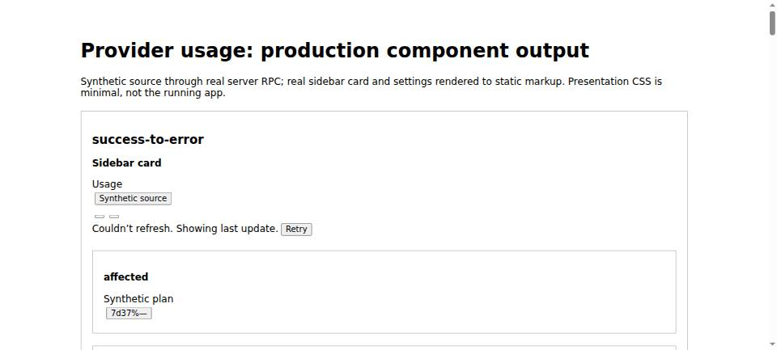
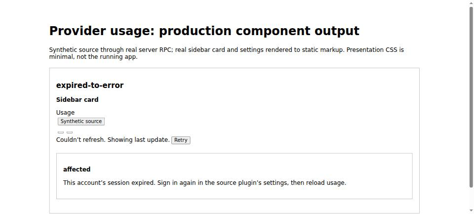

#7421 · Account collection errors discard current state and reuse obsolete usage
Verdict: REPRODUCED · Root-cause confidence: high · reproduction label: confirmed-repro
1. TL;DR
A usage source can successfully return a structured account-level collection error, but the aggregation server treats that reply as a failed RPC. It drops the source message and keeps the previous account state, including an obsolete sign-in instruction or old successful quota values. One affected account therefore produces a generic warning for its whole group, even with a healthy sibling. A new reproduction against the real server RPC and production renderers confirms this in two clean checkouts; no real accounts or live bb runtime were used.
2. Claims vs findings
| Claim | Finding | Evidence |
|---|---|---|
| A reported account error loses its message and becomes a group failure. | Verified | All six source-error cases return the same generic group error; no card contains the synthetic source message. |
| Earlier quota values or sign-in states remain after the source changes its state. | Verified | Success → error retains 37% and a synthetic plan; expired → error and unauthenticated → error retain their previous statuses. not_installed also stays cached, and the sidebar filters that row out. |
| A first error has no usable row state. | Verified | Both the isolated-account case and the healthy-sibling case return usage: null. The isolated card renders “Couldn’t load usage.” |
| Transport failure follows the same path. | Verified | A separately thrown RPC produces an identical snapshot to success → source error. |
| The row exposes neither measurement age nor an account-local stale marker. | Verified | The strict output row schema contains neither field; its renderer receives the old status only. |
| Codex API-key accounts can produce this error state. | Static evidence only | plugins/provider-codex/src/bridge/provider-maintenance.ts:348 returns status: error for that credential type. No real credential or provider process was exercised. |
| Historical live-account behavior and full running-app presentation. | Unverified | This investigation uses a synthetic source and static production-component rendering, not the reporter’s installation or a signed-in browser session. |
3. Environment
- Public target repository: get-bb/bb; both checkouts pinned to the full trusted base above.
- Debian GNU/Linux 12; Node v22.19.0; pnpm 9.15.0; Vitest 4.1.12; Plugin SDK 0.6.140.
- Fresh HTTPS clones named first and second below; separate dependency installations and SDK builds. Reproduction runs at 10:54:19 UTC and 10:54:44 UTC, November 11, 2026.
- Synthetic usage source only. No bb server, provider login, runtime data directory, application ports, or database were required. The screenshot browser opened only an in-memory HTML document built from the synthetic result.
4. Minimal reproduction
This test was written from trusted repository contracts and existing testing interfaces, not copied or executed from the issue. It runs the real plugin entry and its getUsage RPC, then passes the returned snapshot to both production display components.
git clone https://github.com/get-bb/bb.git bb-7421-first cd bb-7421-first git fetch origin main git checkout --detach 365d7c5237ae270be0555b5b44ea61020252713e pnpm install --frozen-lockfile --prefer-offline pnpm exec turbo run build build:types --filter=@get-bb/plugin-sdk Save the complete test below as plugins/provider-usage/slopcop-7421.test.tsx. pnpm exec turbo run test --filter=bb-plugin-bb--provider-usage --force -- slopcop-7421.test.tsx Expected repro exit code: 1 (one passing observation test, one failing regression test). Output files in plugins/provider-usage/: slopcop-7421-observed.json and slopcop-7421-rendered.html. Existing-suite control: pnpm exec turbo run test --filter=bb-plugin-bb--provider-usage -- server.test.ts app.test.tsx settings.test.tsx usage-schema.test.ts usage-normalization.test.ts Repeat the clone into bb-7421-second, check out the same full commit, install/build again, save the same test, and rerun the forced repro command.
Expected invariant: after the source successfully reports a collection-error state, the row must not keep claiming that its previous authentication state is still current. No choice about retaining successful quota values is necessary to demonstrate this stale-state defect.
Actual regression failure, verbatim:
AssertionError: expected 'expired' to be 'error' // Object.is equality Expected: "error" Received: "expired" Test Files 1 failed (1) Tests 1 failed | 1 passed (2)
Actual result rows, JSON captured by the passing observation test:
[
{
"name": "success-to-error",
"groupError": "Some usage could not be refreshed.",
"usage": {
"status": "ok",
"accountEmail": null,
"planLabel": "Synthetic plan",
"windows": [
{
"label": "Weekly limit",
"usedPercent": 37,
"resetsAt": null,
"cost": null
}
]
},
"messageVisible": false
},
{
"name": "expired-to-error",
"groupError": "Some usage could not be refreshed.",
"usage": {
"status": "expired"
},
"messageVisible": false
},
{
"name": "unauthenticated-to-error",
"groupError": "Some usage could not be refreshed.",
"usage": {
"status": "unauthenticated"
},
"messageVisible": false
},
{
"name": "not_installed-to-error",
"groupError": "Some usage could not be refreshed.",
"usage": {
"status": "not_installed"
},
"messageVisible": false
},
{
"name": "cold-error-with-healthy-sibling",
"groupError": "Some usage could not be refreshed.",
"usage": null,
"messageVisible": false
},
{
"name": "cold-error-only",
"groupError": "Some usage could not be refreshed.",
"usage": null,
"messageVisible": false
},
{
"name": "success-to-transport-failure",
"groupError": "Some usage could not be refreshed.",
"usage": {
"status": "ok",
"accountEmail": null,
"planLabel": "Synthetic plan",
"windows": [
{
"label": "Weekly limit",
"usedPercent": 37,
"resetsAt": null,
"cost": null
}
]
},
"messageVisible": false
}
]
The healthy sibling remains status: ok, but it shares the affected account’s group notice. The observation test deliberately characterizes the bug; the second test is the red regression assertion. No production fix was applied.


Complete reproduction test (save under the filename shown above)
import { writeFileSync } from "node:fs";
import { renderToStaticMarkup } from "react-dom/server";
import { expect, it } from "vitest";
import { createFakePluginHost } from "@get-bb/plugin-sdk/testing";
import { installTestPluginRuntime } from "@get-bb/plugin-sdk/testing/app";
import plugin from "./server.js";
import { ProviderUsageStatusContent } from "./app.js";
import { UsageSettingsContent } from "./settings.js";
import { usageSnapshotSchema, type UsageSnapshot } from "./usage-schema.js";
import {
usageListMethod,
type UsageMeasurement,
} from "./usage-source-contract.js";
installTestPluginRuntime();
const observationTime = 1_800_100_000_000;
const sourceMessage = "Synthetic collection failure for selected account";
const identity = {
accountEmail: null,
planLabel: "Synthetic plan",
plan: null,
};
const successful: UsageMeasurement = {
accountKey: null,
observedAt: observationTime,
usage: {
status: "ok",
...identity,
windows: [
{
kind: "weekly",
id: "quota",
label: "Weekly limit",
usedPercent: 37,
resetsAt: null,
model: null,
cost: null,
},
],
},
};
const collectionError: UsageMeasurement = {
accountKey: null,
observedAt: observationTime,
usage: { status: "error", ...identity, message: sourceMessage },
};
async function collect(
previous: UsageMeasurement | null,
transportFailure = false,
sibling = true,
) {
let current = previous ?? collectionError;
let throwTransport = false;
const host = createFakePluginHost({
pluginId: "provider-usage",
sdk: {
system: { config: async () => ({ primaryHostId: null }) },
hosts: { list: async () => [] },
providers: { list: async () => [] },
plugins: {
experimental_discoverRpc: async () => [
{
pluginId: "synthetic-usage",
displayName: "Synthetic source",
method: usageListMethod,
},
],
callRpc: async ({ method, input, outputSchema }) => {
if (method === usageListMethod)
return outputSchema.parse({
resources: (sibling ? ["affected", "healthy"] : ["affected"]).map(
(id) => ({
id,
label: id,
providerId: "synthetic",
scope: { kind: "shared" },
}),
),
});
const resource = input as { resourceId: string };
if (resource.resourceId === "healthy")
return outputSchema.parse(successful);
if (throwTransport) throw new Error("Synthetic RPC failure");
return outputSchema.parse(current);
},
},
},
});
plugin(host.bb);
const request = {
force: true,
machineIds: null,
providerIds: ["synthetic"],
maxAgeMs: 0,
};
try {
if (previous !== null)
await host.harness.behavior.callRpc("getUsage", request);
current = collectionError;
throwTransport = transportFailure;
return usageSnapshotSchema.parse(
await host.harness.behavior.callRpc("getUsage", request),
);
} finally {
await host.harness.lifecycle.dispose();
}
}
function card(snapshot: UsageSnapshot) {
return renderToStaticMarkup(
<ProviderUsageStatusContent
pluginId="provider-usage"
dismiss={() => {}}
snapshot={{ data: snapshot, error: null, isRefreshing: false }}
threadMachineId={null}
refreshEnabled={false}
/>,
);
}
it("records actual error transitions through the production RPC and both renderers", async () => {
const snapshots: Record<string, UsageSnapshot> = {};
snapshots["success-to-error"] = await collect(successful);
for (const status of [
"expired",
"unauthenticated",
"not_installed",
] as const) {
snapshots[`${status}-to-error`] = await collect({
accountKey: null,
observedAt: null,
usage: { status, ...identity },
});
}
snapshots["cold-error-with-healthy-sibling"] = await collect(null);
snapshots["cold-error-only"] = await collect(null, false, false);
snapshots["success-to-transport-failure"] = await collect(successful, true);
const markup = Object.fromEntries(
Object.entries(snapshots).map(([name, snapshot]) => [
name,
{
card: card(snapshot),
settings: renderToStaticMarkup(
<UsageSettingsContent
machines={snapshot.machines}
selectedId={snapshot.machines[0].id}
loading={false}
error={false}
onSelect={() => {}}
onRefresh={() => {}}
/>,
),
},
]),
);
const rows = Object.entries(snapshots).map(([name, snapshot]) => ({
name,
groupError: snapshot.machines[0].error,
usage: snapshot.machines[0].providers[0].usage,
messageVisible: markup[name].card.includes(sourceMessage),
}));
writeFileSync(
"slopcop-7421-observed.json",
JSON.stringify({ rows, snapshots }, null, 2),
);
writeFileSync(
"slopcop-7421-rendered.html",
`<!doctype html><html lang="en"><meta charset="utf-8"><title>Production Provider usage render evidence</title><style>body{font:16px system-ui;max-width:1000px;margin:24px auto;padding:20px}section{border:1px solid #bbb;padding:18px;margin:20px 0}svg{width:18px;height:18px}button{margin:4px}h2{font-size:20px}h3{font-size:16px}</style><h1>Provider usage: production component output</h1><p>Synthetic source through real server RPC; real sidebar card and settings rendered to static markup. Presentation CSS is minimal, not the running app.</p>${Object.entries(
markup,
)
.map(
([name, value]) =>
`<section><h2>${name}</h2><h3>Sidebar card</h3>${value.card}<h3>Settings</h3>${value.settings}</section>`,
)
.join("")}</html>`,
);
expect(
rows.every(
(row) => row.groupError === "Some usage could not be refreshed.",
),
).toBe(true);
expect(
snapshots["success-to-error"].machines[0].providers[0].usage?.status,
).toBe("ok");
expect(
snapshots["expired-to-error"].machines[0].providers[0].usage?.status,
).toBe("expired");
expect(
snapshots["unauthenticated-to-error"].machines[0].providers[0].usage
?.status,
).toBe("unauthenticated");
expect(
snapshots["cold-error-only"].machines[0].providers[0].usage,
).toBeNull();
expect(rows.some((row) => row.messageVisible)).toBe(false);
expect(snapshots["success-to-error"]).toEqual(
snapshots["success-to-transport-failure"],
);
expect(markup["expired-to-error"].card).toContain("session expired");
expect(markup["cold-error-only"].card).toContain("Couldn’t load usage.");
console.log(JSON.stringify(rows, null, 2));
});
it("regression: a source collection error supersedes an obsolete authentication state", async () => {
const result = await collect({
accountKey: null,
observedAt: null,
usage: { status: "expired", ...identity },
});
expect(result.machines[0].providers[0].usage?.status).toBe("error");
});
5. Root cause
- The usage-source contract explicitly represents per-account collection failures as usage states, not transport failures: plugins/provider-usage/usage-source-contract.ts:103.
- plugins/provider-usage/server.ts:191 normalizes the valid response and throws on status: error before measurements.set and failures.delete. The latest state and message never enter the cache.
- plugins/provider-usage/server.ts:290 catches the synthetic throw and records a failure key. plugins/provider-usage/server.ts:354 constructs the row exclusively from the previous cache entry and sets machine.error for that key.
- The sidebar converts the machine error to the generic retry notice at plugins/provider-usage/app.tsx:612. Its existing per-account error-message branch at plugins/provider-usage/app.tsx:329 cannot receive a newly reported source error through this path. Settings has the corresponding branch at plugins/provider-usage/settings.tsx:359.
- The stricter panel schema at plugins/provider-usage/usage-schema.ts:16 can represent either ok or error but has no field for a current source error alongside retained successful values, nor observedAt. That limits a complete stale-value presentation fix.
Key source excerpt:
const value = normalizeUsageMeasurement(raw);
if (value.usage.status === "error")
throw new Error("Usage could not be refreshed.");
measurements.set(key, { value, loadedAt: Date.now() });
failures.delete(key);
Retention itself is intentional: plugins/provider-usage/README.md:13 documents keeping earlier measurements after a failed refresh. Repository history identifies the introduction of this plugin/contract at commit c7d2c7f593. An unconditional cache replacement would fix the status loss but also remove successful values, changing that deliberate policy.
6. Proposed fix and automation safety
Separate a successfully delivered account state from inventory/RPC failure. Always retire obsolete authentication/installation states when a newer account state arrives. For previously successful values, decide whether to replace them with the current error, or preserve the last successful measurement alongside account-local error and age metadata. Preserve existing transport/inventory error behavior as a separate concern.
No automatic PR: a complete repair requires choosing successful-value retention behavior; retaining values while exposing the current error and its age also requires changing the strict RPC row schema. Either fails this rule’s no-product-decision / no-public-schema-change safety gate. Dropping only obsolete sign-in hints is an incomplete fix for the reproduced error-message and group-warning defects. No fix branch was created or pushed.
7. Linked PR review
PR #7420 — closed; related source-side change only
Read-only GitHub metadata and diff inspection show changes confined to Account Pooler, adding a rejected-login classification and reporting expired for those accounts. Its diff does not alter Provider usage’s fetchResource or cache/output behavior. Finding: it does not fix the generic error-state consumption defect at server.ts:193. This is a scope limitation, not a claim that the Account Pooler patch is incorrect. Its branch and tests were not checked out or executed. The trusted-main regression above still fails. No open PR linked to this issue was found by timeline metadata or the issue-number PR search.
8. Related issues
Read-only repository triage queries found #7417 classified Bug / Medium / Medium with providers and confirmed-repro, and #6685 classified Bug / Medium / Medium with providers and provider-claude-code. These are context for classification, not proof of this report’s findings.
9. Verification
The same agent repeated the reproduction in a second fresh clone, not a reset of the first checkout. Before adding the test, its working tree was clean and HEAD equaled the recorded base. It received a separate frozen install and SDK build. The test file was then copied from the first investigation, and Turbo was run with --force to prevent cached reproduction output.
Second run: the same command returned exit 1, with one observation test passing and the regression failing with expected error / received expired. Both observed JSON files have SHA-256 fd60f2c20efadb89f6c9ac417e50c6165d3fec4d9f1c0f8378abd5a7c1750d3f. No report correction was necessary. This is a repeat by the same investigator, not independent verification.
The five existing test files passed: 23 tests passed. git diff --check passed in both checkouts. A final fetch confirmed origin/main still equals the recorded base; no intervening Provider usage fix was found.
10. Appendix and limits
The exact reproduction commands, source, result rows, expected failure, base, and environment are embedded above so the report is self-contained. Raw install/build/test logs, browser output, and source artifacts remain outside the public reports repository in local investigation storage, as that repository requires. The report does not publish runtime data or real account identity.
Untrusted-data handling: issue text, comments, links, proposed patches and linked PR content were treated only as claims. No issue-provided script, command, branch or external URL was executed or fetched. Only trusted origin/main code and this investigator’s new reproduction ran. Browser screenshots show real production-component output from synthetic data, not a reconstructed product mockup. Full running-app behavior, the reporter’s historical install, provider network behavior and real-account recovery remain outside the verified scope.